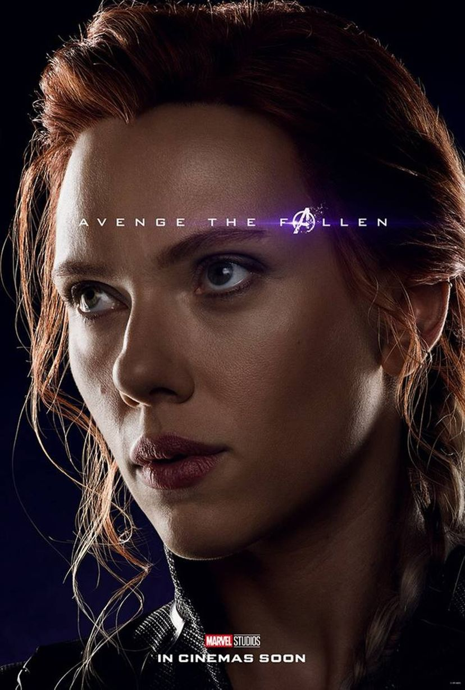

 Uma espiã altamente treinada trabalhando para a S.H.I.E.L.D. Sobre o personagem e sua relação com o Gavião Arqueiro, Johansson disse: "Nossos personagens têm uma longa história. Eles lutaram juntos por um longo tempo em um monte de batalhas em muitos países diferentes. Os dois membros deste grupo são guerreiros especializados que não têm superpoderes, a Viúva Negra é definitivamente um da equipe, embora ela não está no elenco simplesmente ser uma coisa romântica ou colírio para os olhos, ela está lá para lutar, então eu nunca me senti como se eu fosse a única garota. Todos temos as nossas várias habilidades e eu me sente igual". No que diz respeito a sua formação, Johansson disse: "Mesmo que Homem de Ferro 2 ,eu nunca fez nada parecido antes. Eu nunca tinha sido impulsionada fisicamente em alguma coisa, ou uma parte de algo tão grande. Para Os Vingadores, eu passei muitos meses de treinamento com a nossa equipe de dublês, e lutar contra todos os outros intervenientes, ele é louco. Eu não faço nada, mas luta o tempo todo".